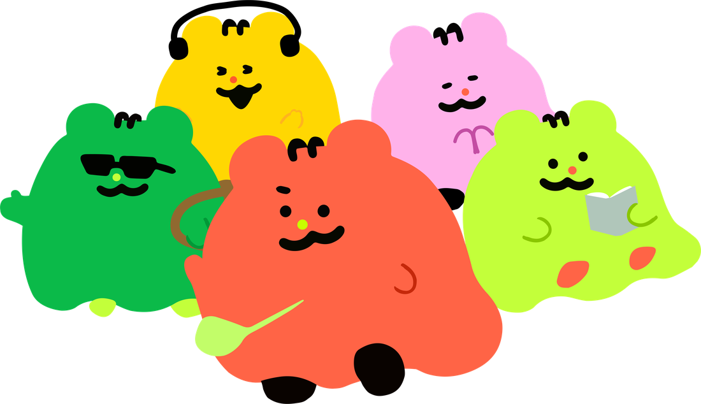
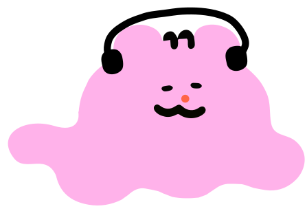
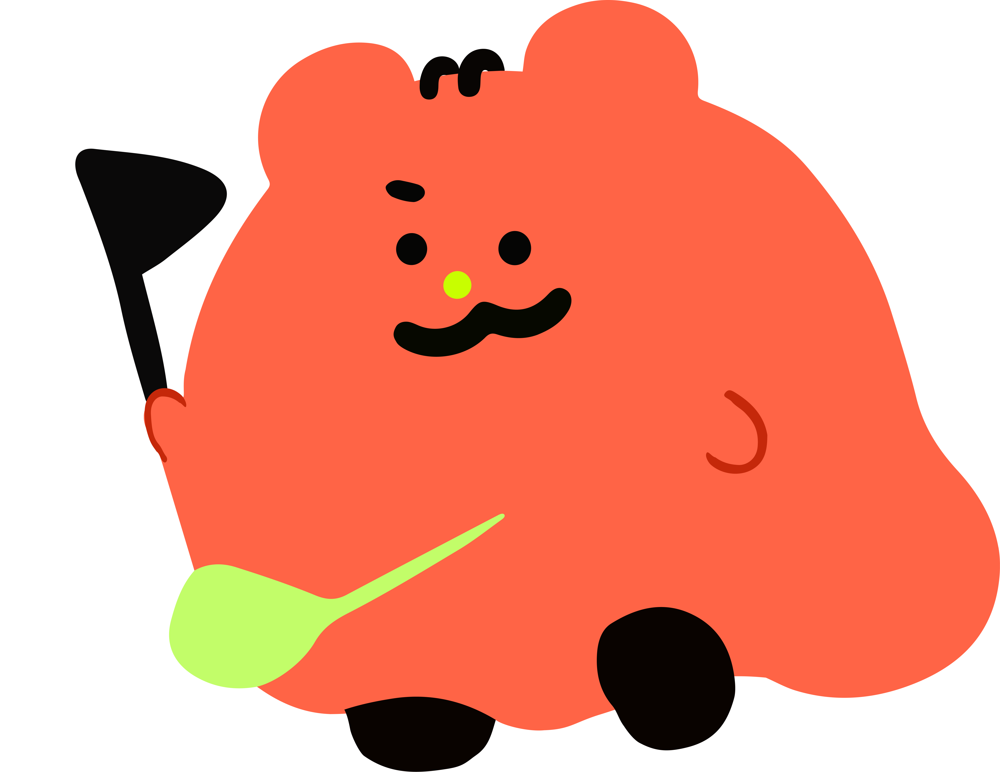
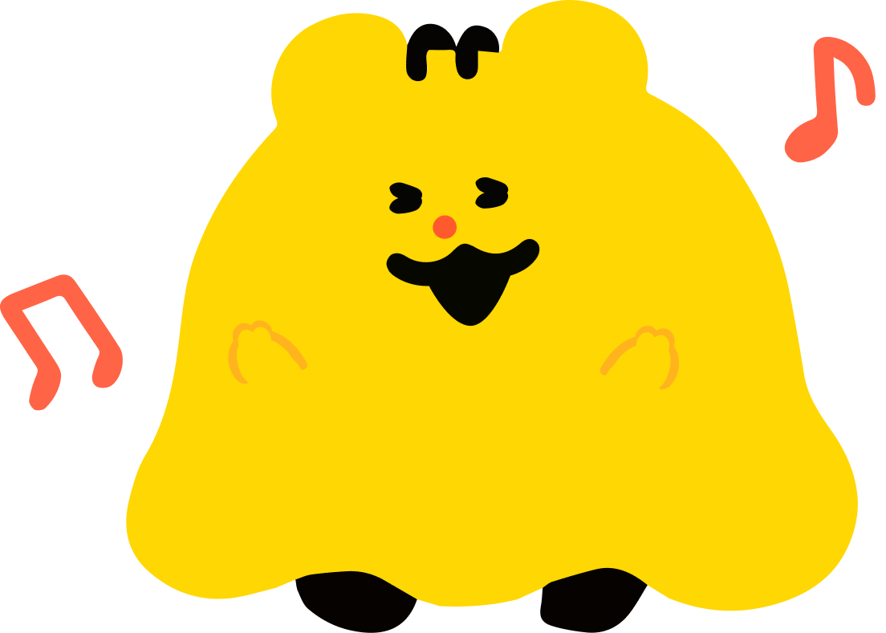
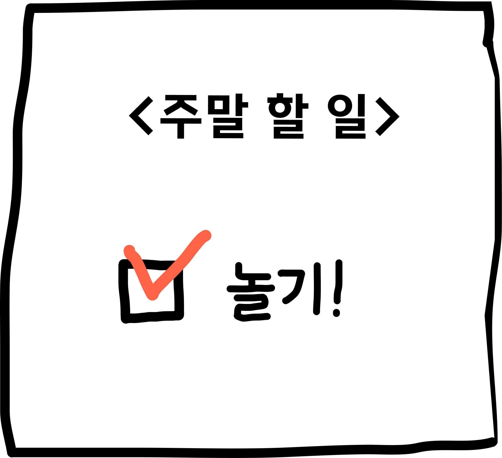

🔑 NFC 키링 · 주말토리
주말에 뭐 하지?
고민은 그만! 주말토리가 같이 정해줄게요.
먼저 인사부터 나눠요 :)


weekend with tori토리님, 안녕하세요!
뭐하고 놀아볼까요?

토리 도감 🧸
0마리 모았어요
ⓘ 토리는 하루에 한 번, 주말랜덤뽑기로 만날 수 있어요
주말 랜덤뽑기 🃏
어떤 방식으로 뽑아볼까요?
질문 1 / 3
질문
주말 랜덤뽑기 🃏
마음이 가는 카드 한 장을 골라 탭해보세요

이번 주말은📖 이 주말과 어울리는 아티클
내 주말 버킷리스트
해보고 싶은 주말을 적고,
이룬 뒤엔 기록을 남겨요 ✏️

아직 시작 전이에요
✏️ 추가하기
오늘의 미션
오늘의 퀘스트 🎯
🌱 오늘부터 시작해봐요
🌤️
TODAY'S QUEST
오늘의 퀘스트
🎉 해냈어요!
어땠는지 짧게 남겨볼까요? (안 써도 괜찮아요)